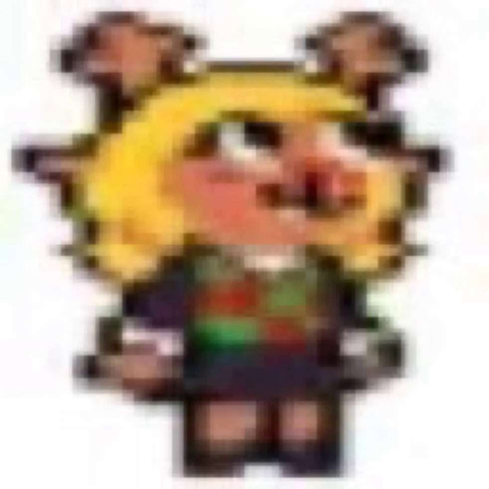

about me
im lesbian trans girl. i can speak english and weak french. canadian, québécoise, and 25% finnish.
my main hobby is programming. i spend a lot of time making random useless projects that never get completed. it's fun though, and i get better at programming as i do it. i mainly do c++ programming, though i can also do c, java, and python (even if i hate python).
i really like music. i cant compose, but i can play piano, and i love listening to music. mainly breakcore, but also other genres. when it comes to artists specifically:
- hakita
- heaven pierce her
- usedcvnt
- hkimori
- toby fox
photography is something i really enjoy. i don't post my photos often but you might see some on my tumblr. i mainly use a nikon d80 for taking photos, which, despite being a 2008 camera, takes amazing photos. sometimes i use my phone but it applies ai upscailing to photos (completly untogglable, thanks samsung) so i prefer to use the d80.
i like audio stuff. i'm not a full blown audiophile, but i know what makes audio equipment good. basically, i look for "good" headphones. i also to the audio engineering for most of my school's events.
ultrakill and deltarune are my favorite games. the gameplay of ultrakill and the story and character of deltarune are what make me like them.
i really like the providence from ultrakill, and i really love noelle holiday and aqua from deltarune.

if you want to know more then you can ask me if you want.